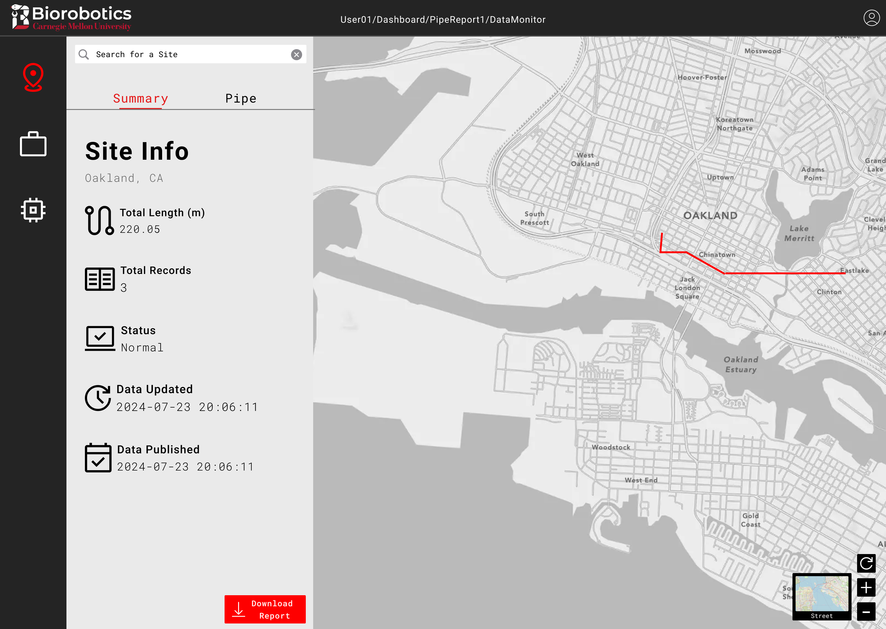
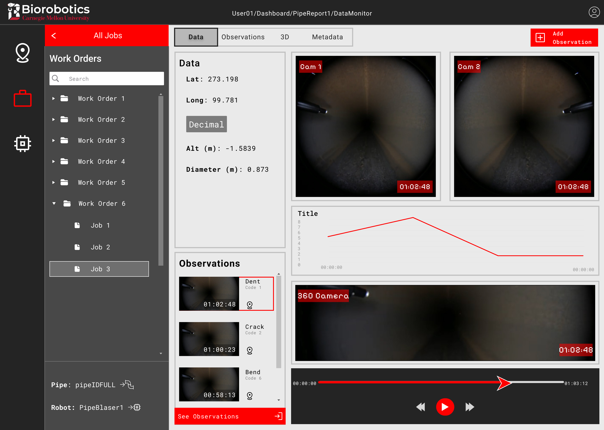

Redesigned the Pipe Portal, a tool for businesses with crucial gas pipeline infrastructure to access data from pipe inspections. This would assist them in pipeline maintenance to prevent dangerous and potentially fatal explosions.
UX/UI Research & Design
Usability Testing
Web Development
Enhanced the Portal's usability based on key heuristics, scoring an average of 82% in how strongly heuristics were met.
To address this pressing issue, a team of engineers in Carnegie Mellon University's Biorobotics Lab built a pipe inspection robot  that can provide its gathered data through the Pipe Portal.
that can provide its gathered data through the Pipe Portal.

This was my main project as a full-time employee of the lab. I quickly realized 2 big challenges I would face.
Internal team members who had used the Portal for testing would have to do. My project manager was also free about twice a week for design reviews.
This was super helpful for getting me familiar with the Portal, its main features, and how end users were expected to use them.
As I traversed the portal, I tracked key features to bring over in my redesign, glaring usability issues, and any initial improvement ideas. These were noted in a report I sent over to my PM for review.
This meant I was building a 2B product whose users likely want a quick, practical, and actionable experience over a trendy, minimalist aesthetic.
After finding some direction, it was time to start sketching ideas.
One of the biggest changes was to the old map sidebar.
Notably, I isolated the Jobs section where users would access data to inspect and annotate, including video footage from the robot.

Users use the video with other metrics to identify flaws within the pipe, which they mark by adding observations at certain times in the videos. Thus, I allocated a large portion of the page just to videos and playback controls, then added a bright, clearly marked “Add Observation” button in the top right.

Nevertheless, after several iterations and design reviews with my PM, the sketches were finalized and I was ready to move into building a higher fidelity prototype in Figma. I kept the color scheme neutral to give it that professional, polished appearance while still following the lab's branding, leveraging CMU's red to make important elements more obvious.
 
We conducted a heuristic-based usability test with 6 lab members. Some had used the old portal
before, while others were internal project team members.
Participants were asked to rank the design across 7 different heuristics, similar to the 5 areas of improvement.
The evaluation was valuable, as we discovered a major flaw in the user flow.
After making the changes from the usability test and with limited time left, I began developing the data display page.
Due to its ease of use, built-in routing, and my extensive experience with it, I selected the Next.js framework.